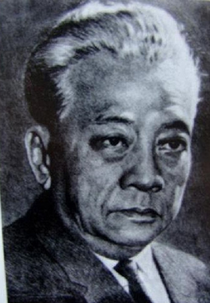
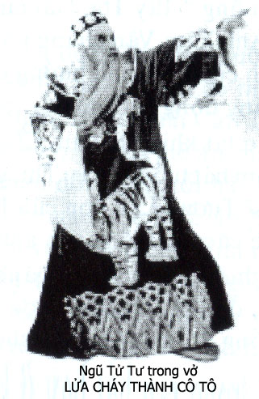

ĐỊA PHƯƠNG NÀO LÃNH CHÚA NẤY,
Năm 1952… Miệt Hậu Giang gạo trắng nước trong, sông sâu nước chảy, đất phù sa màu mỡ, người dân sống sung túc hiền hòa. Dù lúc ấy chiến tranh Việt Pháp vẫn còn ác liệt trên các chiến trường trong toàn quốc, nhưng chỉ riêng ở miền Tây, miệt Hậu Giang, người ta có cảm giác như thần chiến tranh không nỡ hủy hoại màu xanh của những cây lành trái ngọt ở nơi nầy. Chợ búa người mua kẻ bán đông vui, đúng là mảnh đất lý tưởng cho các đoàn hát cải lương sinh sống.

Nghệ sĩ NĂM CHÂU.
Tôi theo đoàn hát Việt Kịch Năm Châu hát ở rạp Minh Châu tại tỉnh Cần Thơ. Tuồng Tây Thi Gái Nước Việt rất ăn khách nên nhiều nhà chức trách huyện và xã phái đại diện đến mua dàn hát, đưa Đoàn về hát ở địa phương mình để gây quỹ. Ban Trị Sự Hòa Hảo ở Chợ Bà thuộc quận Cái Vồn mua dàn với một giá cao nhất nên đoàn Việt Kịch Năm Châu qua hát sau khi rời rạp Minh Châu.
Chợ Bà, quận Cái Vồn ở bên kia bờ sông Hậu, cách tỉnh ly Cần Thơ vài cây số. Sở dĩ địa phương nầy và ngôi chợ mang tên “Chợ Bà” là vì do bà Thiếu Tướng Năm Lửa bỏ tiền ra xây cất và tài trợ cho mọi hoạt động của Ban Trị Sự Hòa Hảo địa phương.
Ba chiếc đò máy lớn chở diễn viên, nhơn viên và đồ đạc cảnh trí, âm thanh, ánh sáng của Đoàn hát cặp bến trước ngôi “Chợ Bà”. Chúng tôi lên bờ, đi thả bộ về rạp hát phía trong xóm sau chợ. Dọc bờ sông, tôi thấy có đôi ba ngôi nhà lợp ngói, còn kỳ dư là những nhà lợp lá, cất theo kiểu ba căn hai chái, vách ván bổ kho, nhà nào nhà nấy khang trang rộng rãi. Mỗi nhà đều có một bàn thờ ông Thiên đặt ở ngoài sân, ngay trước cửa nhà. Dân chúng đều mặc áo bà ba màu dà, màu nâu sậm. Đàn ông đều có búi tóc và để râu dài. Nét mặt trang nghiêm, mọi người dân ở đây đều không có vẻ cỡi mở vui vẻ như dân chúng ở bên thành phố Cần Thơ.
Chúng tôi đang lo sắp đặt phông, màn, đèn và âm thanh trong rạp thì tin tức từ chợ về cho anh em biết là chị Đầm, (thân mẫu của nghệ sĩ Nam Hùng, tẩm khậu nấu ăn của đoàn hát? bị Ban quản trị Chợ Bà bắt nằm dài giữa chợ, đánh năm roi. Anh em dàn cảnh và nghệ sĩ nổi nóng, tính kéo ra chợ để trả đũa cho chị Đầm, anh em không muốn ở lại hát ở cái nơi mà người ta khinh thường, hà hiếp nghệ sĩ; nhưng ông Tám Kiết, Quản lý của đoàn yêu cầu anh em chờ ông ra chợ, bảo lãnh chị Đầm về để biết rõ sự thật ra sao rồi sẽ có thái độ.
Anh Tám Kiết ra chợ, bảo lãnh chị Đầm về. Anh em mới biết là trong cả xã vùng Chợ Bà, mọi người đều ăn chay. Chị Đầm ra chợ kiếm mua thịt heo, gà, vịt, cá để về nấu cơm cho anh em trong gánh hát ăn, như vậy là phạm tội sát sanh và trái với tập tục của địa phương. Ban Quản Trị chợ đánh chị năm roi để răn dạy và làm gương cho mọi người đang mua bán ở chợ.
Anh em nhôn nhao phản đối, không muốn ở lại hát, kêu ông Quản lý trả tiền mua dàn, kéo nhau trở về tỉnh Cần Thơ.
Ông Tám Kiết nói:
– Làm như vậy là thỏa được lòng tự trọng của các anh nhưng như vậy thì sẽ rã gánh hát, vì nghệ sĩ đi về Cần Thơ thì dễ vì có thể đi đò như người hành khách bình thường, còn phông màn, máy móc âm thanh, dàn đèn projecteur thì đâu có thể dùng đò máy của Ban Trị Sự H.H để chở ra khỏi nơi nầy. Họ mướn đoàn về đây hát cho ông Bà Thiếu Tướng coi, mình bỏ đi là đụng chạm tới ông Thiếu Tướng. Thời buổi chiến tranh, rã gánh là cái chuyện nhỏ, nếu họ bắt giam mình lại, nói là Việt Minh phá hoại thì mình chỉ còn có một cửa tử mà thôi, không ai có thể cứu mình và cũng không khiếu nại nhờ quyền lực của nơi nào khác để cứu mình. Nhứt câu nhịn, chín câu lành!
Ông Tám Kiết căn dặn thêm về phương cách sống trong vùng Chợ Bà Cái Vồn trong năm ngày đoàn hát bán dàn:
– Thứ nhứt, không được đi la cà trong thôn xóm vì người dân có đạo Hòa Hảo ở đây rất nghi ky những người lạ mặt, Chợ Bà là một vùng chống Việt Minh. Ai đi vô các thôn xóm xa có thể bị bắt cóc, bị mất tích mà Đoàn hát không biết khiếu nại với ai.
– Thứ hai, không đi mua bán gì ở chợ hay trong các tiệm quán.
– Thứ ba, khi vãn hát rồi thì ăn cháo của bà tẩm khậu nấu, ăn xong là về chỗ ngủ, không được đi ra khỏi rạp, không được thức khuya đờn ca.
– Thứ tư, nếu có ai đến gạ nói chuyện hay hỏi han về nhận xét đối với đia phương thì các nghệ sĩ không được tự do phát biểu mà phải báo ngay cho Ban Quản Lý của đoàn hát để Ban Quản Lý tiếp chuyện với họ.
Các nghệ sĩ trong đoàn đều có gặp phải những chuyện độc tài độc đoán của các lãnh chúa địa phương nên thông cảm với lời dặn dò của Ông Quản Lý Tám Kiết; ai nấy lo thu xếp chỗ ở, chỗ làm tuồng của mình và không tiếp chuyện với những khán giả hiếu kỳ đang kéo tới rạp hát để xem mặt đào kép.
Đêm diễn đầu tiên đoàn hát tuồng Tây Thi Gái Nước Việt.

Kim Cúc – Bảy Nhiêu – Kim Lan
Nghệ sĩ Năm Châu thủ vai vua Ngô Phù Sai, Kim Lan thủ vai Tây Thi, Bảy Nhiêu vai Ngũ Tử Tư, Văn Lang thủ vai Phạm Lãi… Đây là thành phần diễn viên mạnh nhất của đoàn đưa ra trong đêm hát đầu tiên ở rạp hát Chợ Bà vì chúng tôi được báo cho biết là Thiếu Tướng Ông Năm sẽ đến xem hát.(Ông Năm là gọi theo người địa phương vì họ kiêng không dám gọi tên).
Người ta đã dẹp bớt bốn hàng ghế, chừa chỗ để một cái bục cao, trên bục đó để một cái ghế bành bằng mây đan, một cái bàn, trên bàn có một cây quạt máy nhỏ, một chai rượu Whisky và một cái ly. Đó là chỗ danh dự dành cho Quan Lớn Thiếu Tướng ngồi coi hát.
8 giờ 30 tối rồi mà đoàn hát vẫn chưa được phép mở màn hát dù cho khán giả đã vô đầy rạp và các nghệ sĩ đều đã hóa trang xong, mũ mãng đàng hoàng. Anh Năm Châu rất bực bội vì anh là người làm việc luôn luôn đúng giờ. Khi hát ở Sàigòn, đúng 8 giờ tối, giờ mở màn hát thì dù trời đang mưa to gió lớn, khán giả vô rạp mới độ mươi người, nghĩa là nếu đứng trên sân khấu nhìn xuống thì sẽ thấy cái rạp trống trơn, anh Năm Châu cũng ra lịnh rung chuông, mở màn hát đúng theo giờ đã quảng cáo.
Bỗng có nhiều tiếng tu hít thổi “rét...rét.. ” chói tai từ ngoài xa, tiếng tu hít chạy thật nhanh tới trước rạp… mọi người được báo là xe jeep của Quan Lớn đã tới. Rồi tiếng tu hít thổi nghe chát chúa trong rạp kèm theo tiếng của hai anh lính cận vệ thay phiên nhau hô lớn: “Quan Lớn đã tới… Mấy người đứng dậy chào Quan Lớn… ” Tất cả khán giả đồng loạt đứng lên và họ chỉ ngồi xuống khi Ông Năm yên vị trong cái ghế bành trên bục cao.
Ông Tám Kiết, Quản Lý đoàn hát chạy lại hỏi nhỏ anh lính cận vệ, tôi thấy anh cận vệ gật đầu, khoát tay, ông Tám Kiết liền chạy bay vô hậu trường, kế đó là chuông reo báo giờ trình diễn.
Mặc đầu bực mình vì hát trễ nhưng anh Năm Châu, chị Kim Lan và ông Bảy Nhiêu hát rất hay lớp Tây Thi mê hoặc Ngô Phù Sai và lớp Ngũ Tử Tư can gián vua.
Quan Lớn Ông Năm cười sặc sụa khi nghệ sĩ Tám Lắm trong vai Bá Chủng, một tên nịnh thần vuốt ve xu nịnh theo ông vua, anh ta bị Ngũ Tử Tư mắng.
Anh lính cận vệ đứng gần Quan Lớn, anh không xem hát mà anh theo dõi thái độ xem hát của Quan Lớn để ra lịnh cho khán giả phải hùa theo. Tiếng tu hít thổi bất ngờ trong rạp hát kèm theo tiếng hô lớn và kéo dài ra của anh cận vệ: “Quan Lớn cười… Sao mấy người không cười? ”
Khán giả ré lên cười như một cái máy cười được bấm nút cho khởi động.
Tiếng tu hít lại nổi lên: “Quan Lớn nín rồi, sao mấy người cười hoài vậy?”
Khán giả lại im re…
Các nghệ sĩ trong đoàn thích thú với cái trò hề của anh lính cận vệ. Ông Tướng ngồi xem hát rất oai phong kia chắc là cũng thích thú khi cái vui buồn của ông ta được theo tiếng tu hít và lời hô lớn của anh cận vệ mà truyền ra khởi động cả rạp hát làm theo. Chỉ có anh Năm Châu là nhăn mặt nhíu mày, buồn khổ… Anh cằn nhằn:
– Trời ơi, người ta coi hát như vầy bằng như người ta chửi cha nghệ thuật!
Tiếng tu hít lại nổi lên: “Quan Lớn vỗ tay, sao mấy người không vỗ tay? “ Tiếng vỗ tay của toàn thể khán giả trong rạp hát lại nổ rang như pháo Tết.
Trong rạp hát bỗng chia thành hai không gian: một không gian trên sân khấu dành cho các nghệ sĩ diễn tuồng và một không gian khác ở dưới khán phòng dành cho hai anh lính cận vệ và khán giả hoạt động theo tiếng lịnh của tu hít, diễn cho thỏa mãn cái tính hách dịch kiêu kỳ của ông Tướng.
Màn một chấm dứt bằng cảnh Hỏa thiêu Cô Tô Đài, vua Ngô Phù Sai – Năm Châu chết chới với trong biển lửa. Tôi thấy ông vua Ngô Phù Sai Năm Châu chới với, hai tay như bơi bơi trong biển lửa, nhưng một nụ cười thoáng hiện trên môi của anh Năm Châu khiến cho tôi ngầm hiểu là anh rất sung sướng được chấm dứt vai hát của anh trong lúc nầy. Anh không còn bận lòng tức giận vì người xem hát không phải là một người thật sự ái mộ cải lương, mà là một người không biết thưởng thức nghệ thuật.
Màn nhung vừa hạ xuống, anh Năm Châu mau mau vô buồng, thay đổi y trang, rửa mặt rồi bước ra sau rạp khá xa để khỏi phải nghe tiếng tu hít và tiếng hô hoán của hai anh lính cận vệ. Anh cũng không muốn nghe những tiếng đờn và câu ca bị xé vụn ra vì cái tiếng tu hít điên rồ đó.
Màn hai bắt đầu… cũng cảnh chiến trường còn ngùn ngụt khói lửa, giữa lớp lớp quân sĩ phơi thây, nàng Tây Thi Kim Lan ca một lớp Văn Thiên Tường rất là hay, nói lên nỗi lòng của một người con gái, tuy đã hoàn thành sứ mạng diệt thù nhưng rồi cuộc đời của nàng cũng phải tan nát như một mảnh vụn của Cô Tô Đài. Giữa lúc Tây Thi tuyệt vọng thì Phạm Lãi đến kịp để cứu Tây Thi, sau bao nhiêu đau khổ chia lìa, hai người yêu cũ gặp lại nhau, họ dìu nhau đi tìm một hải đảo hoang vu để xây hạnh phúc và để tránh cuộc sống nhung lụa vàng son nhưng phải lệ thuộc dưới quyền của một nhà vua đầ tham vọng. Nghệ sĩ Văn Lang và nữ nghệ sĩ Kim Lan thực là xứng đào xứng kép, thinh sắc lưỡng toàn, điệu bộ diễn xuất và giọng ca quyến rũ mê hồn đã làm cho khán giả say mê theo dõi.
Bỗng có tiếng một cây gậy đập mạnh và nhịp liên hồi trên bàn. Nghệ sĩ trên sân khấu ngưng bặt tiếng ca, ngỡ ngàng nhìn về phía vị khán giả Quan Lớn kia vì chính ông Thiếu Tướng dộng liên tục cây baton xuống bục cây. Khán giả cũng im lặng, hướng mắt nhìn về vị khán giả khó tính đó.
Anh lính hầu cận vẫn là người truyền lại lịnh của Quan Lớn.
Anh thổi một tiếng tu hít như vị trọng tài thổi phạt trên sân bóng đá rồi tằng hắng một tiếng, lớn giọng truyền:
– Quan Lớn nói Quan Lớn muốn coi lại cái lớp tuồng hồi nãy, cái lớp Ngô Phù Sai dê Tây Thi rồi bị chết trong Cô Tô Đài. Bỏ cái màn hát nầy đi. Hát lại màn trước cho Quan coi. “
Màn nhung buông xuống giữa sự ngơ ngác và tức giận của nghệ sĩ.
Ông Tám Kiết, Quản lý của đoàn chạy ra thưa:
– Bẩm Quan Lớn, màn một hết nên anh kép hát đã bôi mặt, thay y trang đi kiếm thức ăn khuya rồi….
– Biểu nó vô vẽ mặt lại, tao chỉ muốn coi lớp Hỏa thiêu Cô Tô Đài thôi…- Ông Năm phán một câu tỉnh bơ rồi ngồi nhịp nhịp cây baton.
Ông Quản lý của gánh hát thừa biết là nếu muốn ăn đòn thì đứng đó mà nói dang ca. Còn khôn hồn thì vô buồng biểu chúng nó vẽ mặt hát lại cái lớp tuồng mà Quan Lớn muốn coi. Anh Tám Kiết dạ một tiếng yếu xìu rồi vô buồng. Anh thừa biết là anh Năm Châu nhứt định sẽ không diễn lại cái lớp tuồng Hỏa thiêu Cô Tô Đài nên anh bảo anh Tám Vân vẽ mặt, đóng thế vai vua Ngô Phù Sai của anh Năm Châu.
Chuông báo hiệu khởi đầu, màn nhung kéo lên, sau khi đoàn vũ nữ và Tây Thi múa hát trên Cô Tô Đài, Vua Ngô Phù Sai say rượu, tròng ghẹo Tây Thi. Nghệ sĩ Tám Vân từng đóng vai Ngô Phù Sai thế cho anh Năm Châu những khi anh Năm Châu không theo đoàn đi hát ở các tỉnh nên Tám Vân thuộc làu làu vai tuồng. Giọng ca, điệu bộ cũng điêu luyện không kém. Thông thường thì đến đoạn Ngũ Tử Tư vào can gián Ngô Phù Sai thì khán giả vỗ tay từng chập sau mỗi câu nói của Ngũ Tử Tư, nhưng không ngờ khi anh Bảy Nhiêu vừa xuất hiện thì thay cho tiếng vỗ tay là tiếng tu hít thổi lên nghe đinh tai điếc óc. Giọng hét lớn và kéo dài của anh Cận Vệ nối sau tiếng tu hít:
– Quan Lớn hỏi thằng vua hồi nãy sao mập quá, thằng nầy sao ốm quá vậy? Kêu ông Bầu ra cho Quan Lớn biểu…ông Bầu đâu?”
Ông Tám Kiết chạy ra, thưa:
– Bẩm Quan Lớn, Anh kép đóng vai Vua hồi nãy bị mập quá nên hát mau mệt, anh ta bị ngất xỉu rồi nên chúng tôi phải thay ông Vua ốm hơn một chút, nhưng vua nầy hát cũng hay lắm, Quan Lớn!

Quan Lớn dọng cây baton xuống bục cây, nói sẵng:
– Dẹp! Thằng vua đó hát hỏng được nữa thì tụi bây bỏ màn nghỉ đi. Quan Lớn không coi hát nữa. “
Ông Thiếu Tướng nói xong, ông đứng dậy, bỏ ra về. Các lính cận vệ thổi tu hít dẹp đường. Ông Tướng đi rồi, khán cũng lục đục kéo ra ngoài, trong rạp số khán giả còn lại không tới nửa rạp. Đoàn vẫn phải tiếp tục hát cho tới hết tuồng, khán giả tiếc tiền mua vé hát nên ráng coi cho hết tuồng, diễn viên diễn như để trả nợ.
Đêm đó, anh Năm Châu và chị Kim Lan báo cho biết là ngày mai hai người đó sẽ về Saigon, Tám Vân thế vai của Năm Châu, nữ nghệ sĩ Tương Lai thế vai của Kim Lan.
Những ngày kế tiếp, các nghệ sĩ còn ở lại đoàn hát còn phải chịu nhiều luật lệ oái oăm hơn nữa của vị lãnh chúa địa phương.